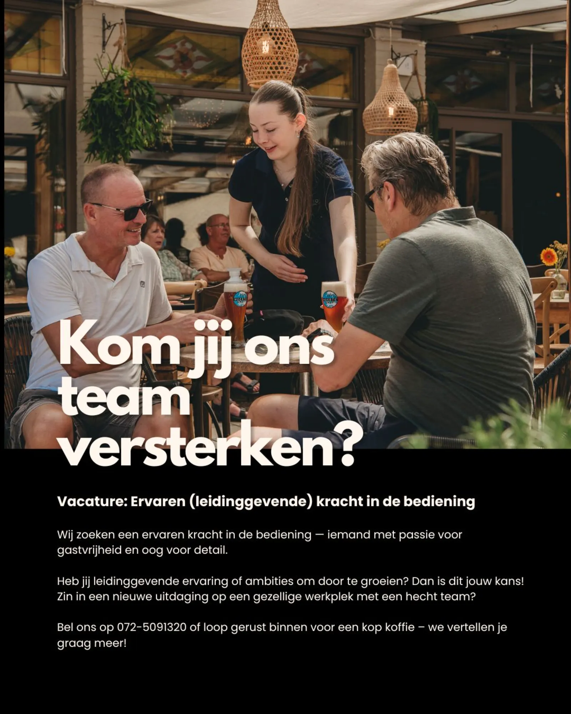
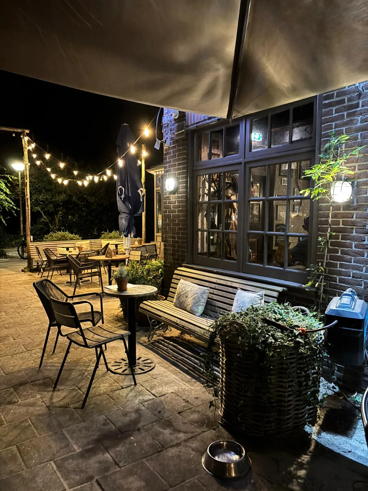
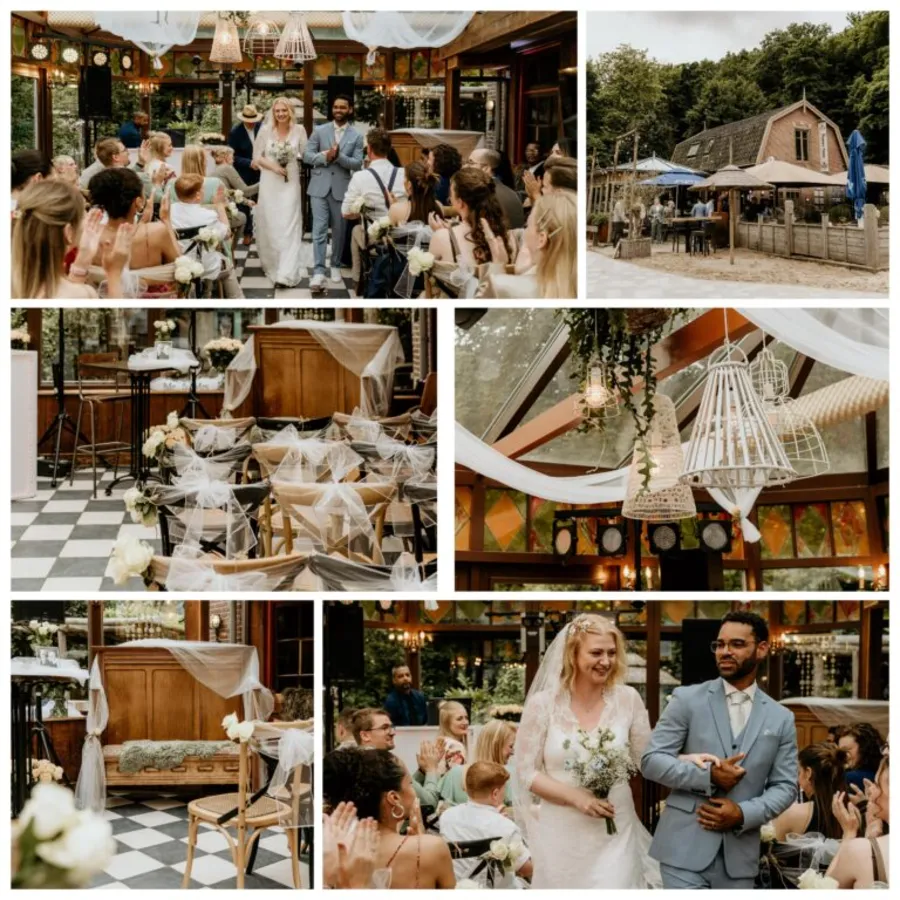
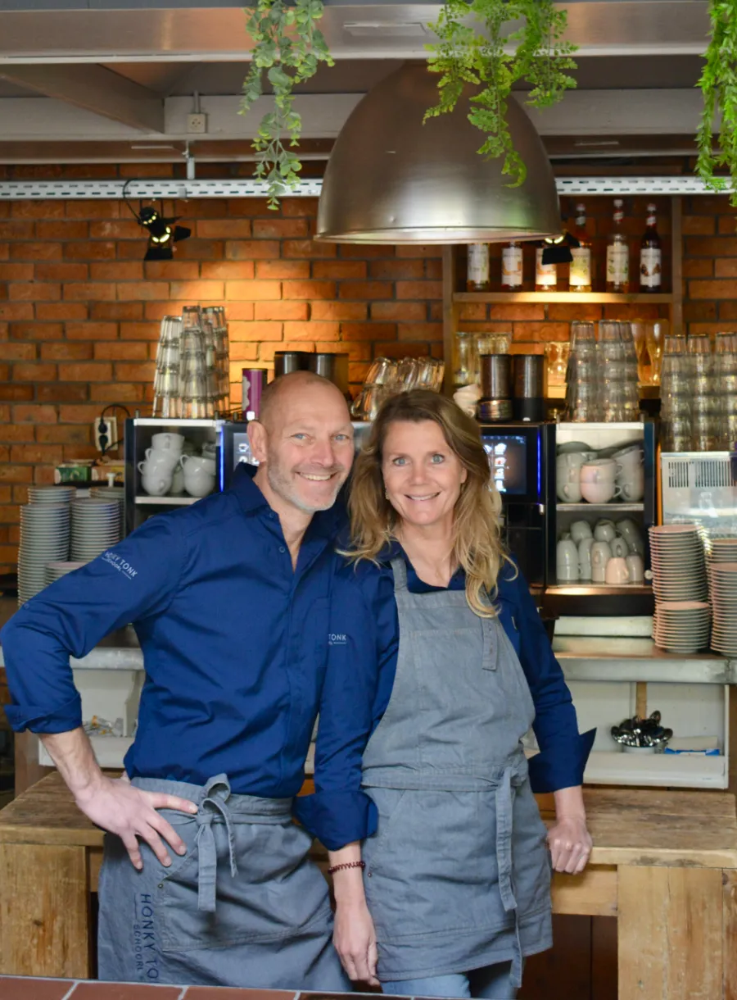
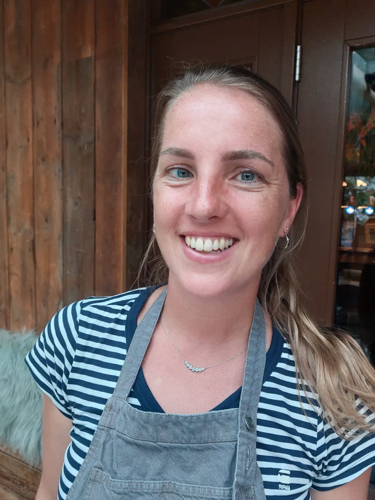
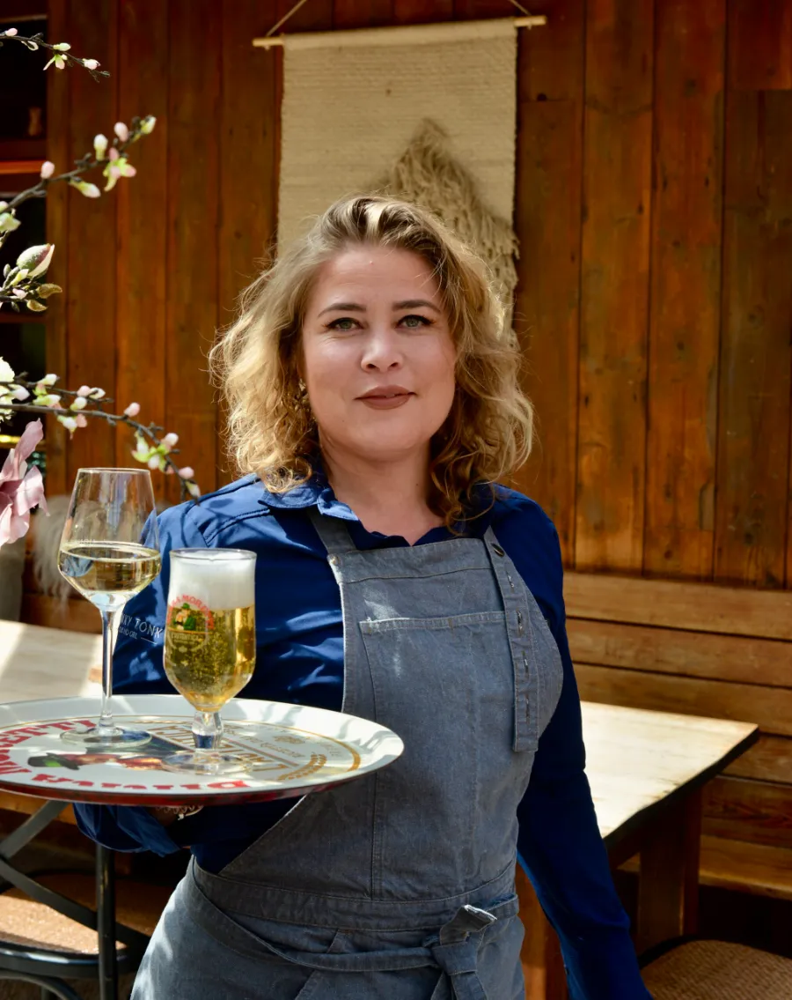

Honky Tonk is gelegen aan het Schoorlse klimduin. Dé plek waar je naartoe gaat na een goede boswandeling voor een lekkere verwenkoffie of een heerlijke lunch in een van de sfeervolle serres. Met mooi weer genieten op het gezellige verwarmde terras met uitzicht op het klimduin, waar de kindertjes naar hartenlust kunnen spelen.


Menukaart
Vers & gevarieerd. Voor elk moment van de dag hebben we een zorgvuldig samengesteld menu voor je klaar staan. Ons keukenteam gaat creatief te werk met heerlijke verse ingrediënten, zodat elke maaltijd een verwenmoment is. Door ons veelzijdige menu is ons restaurant toegankelijk voor iedereen.
11.30 – 16.00
Lunch onze brood lunchgerechten worden geserveerd met vezelrijk landbrood
Huisgemaakte tonijnsalade13,5
focaccia | gekookt ei | cherrytomaat
Carpaccio13,5
landbrood | pittenmix | Grana Padano | rucola | truffelmayonaise
Heb je vragen over voedselallergenen? Laat het ons weten!
glutenvrij of op verzoek glutenvrij
lactosevrij of op verzoek lactosevrij
vegetarisch of op verzoek vegetarisch
bevat sporen van noten en/of pinda’s
Agenda
Evenementen en activiteiten bij Honky Tonk.
25–26dec
Kerstbrunch op eerste & tweede kerstdag
Kerstbrunch van 10.30 tot 14.00 uur: volwassenen € 34,50 p.p., kinderen t/m 12 jaar € 19,50. Vanaf 14.00 uur à la carte, om 17.00 uur gesloten. De Kerstman is aanwezig! Reserveer op tijd.
Fiets- en wandelroutes met Honky Tonk als start- of eindpunt: ontdek de routes.
Groepen & arrangementen
Gezellig lunchen, borrelen of dineren aan het bijzondere Schoorlse klimduin. Iets te vieren? Wij zijn uw professionele partner in gezelligheid en genieten! Met zorg hebben wij enkele mogelijkheden uitgewerkt om u te inspireren.
Groepslunch
Lunchen met een grote groep zonder dat je in de kaart hoeft te kijken. Op feestelijke wijze wordt een heerlijke lunch op tafel gepresenteerd. Erg geschikt voor jubilea, verjaardagen, vieringen of na een wandeling.
Vooraf serveren wij aan tafel een soepje van het seizoen.
Op etagères serveren wij verschillende broodjes en vers fruit.
Arrangement is exclusief drankjes. Wij gaan uit van 3 broodjes per persoon.
Volwassenen
€ 19,50 p.p.
Kinderen tot 12 jaar
€ 14,50 p.p.
Minimaal aantal personen
25
Uit te breiden met Vegetarische quiche en wrap met gerookte zalm + € 6,50 p.p. Glaasje prosecco + € 5,00 p.p.
Graag vooraf via mail of telefonisch reserveren (uiterlijk 2 dagen van tevoren). Uiteraard houden wij rekening met dieetwensen en allergieën. Vermeld dit graag bij uw reservering.
High tea
Anna, de zevende hertogin van Engeland in 1840, kreeg tussen de lunch en het diner trek. Haar bediende bedacht toen een oplossing en bracht haar hapjes en allerlei soorten thee. Zo kon de tijd tussen lunch en diner overbrugd worden en is de “high tea” in het leven geroepen.
Wij presenteren een Engelse high tea waar het bediend team van Anna trots op zal zijn:
De high tea wordt gepresenteerd in Engels porselein.
Een etagère vol met hartige en zoete gerechtjes.
Verschillende soorten thee. Koffie ook mogelijk.
High tea, vanaf 2 personen
€ 24,95 p.p.
Met een glaasje bubbels
€ 29,95 p.p.
Graag vooraf reserveren (uiterlijk een dag van tevoren) en duidelijk aangeven dat het om een high tea gaat. Uiteraard houden wij rekening met dieetwensen en allergieën.
Feest
Honky Tonk is uw professionele partner in het geven van een feest of bruiloft. Door onze diversiteit en gastvrijheid kunnen wij vele settingen creëren. Denk aan ons nostalgische café, de bostuin of het restaurant met dansvloer en DJ! Wij verzorgen voor u en uw gasten een onvergetelijke avond. Het arrangement kan in overleg naar wens worden aangepast.
Arrangement · aanvang 20.30, durend tot 00.30
Onbeperkt Peroni
Onbeperkt speciaal bier
Onbeperkt witte, rosé en rode wijn
Onbeperkt frisdrank
Onbeperkt jenever, Vieux en bessen
2 rondes warm bittergarnituur
2 rondes luxe koude hapjes
Optie om een DJ, band of zanger te boeken
Feestarrangement, 50 tot 150 personen
€ 37,50 p.p.
Optioneel bij te boeken: een frietje ter afsluiting van uw feestavond.
BBQ
Stel je voor. Lekker weer, zonnebril op, voetjes in het zand, drankje in de hand en op zijn tijd prik je een lekker stukje vlees van de BBQ. Kan het leven nog beter?
Een heerlijk vleesarrangement aangepast op het seizoen
Twee verschillende seizoen salades
Stokbrood met kruidenboter
Verse friet
2 koude sauzen & pindasaus
BBQ, vanaf 40 personen
€ 29,50 p.p.
Kinderen tot 12 jaar
€ 19,50 p.p.
Uiteraard houden wij rekening met dieetwensen en allergieën. Vermeld dit graag bij uw reservering.
Walking dinner
Laat je verrassen door verschillende kleine gerechtjes uit eigen keuken! Wat er precies wordt geserveerd hangt af van het seizoen en de wensen. De gerechtjes worden in rondes uitgeserveerd en kunnen uit de hand gegeten worden, zodat iedereen lekker door elkaar kan lopen en niemand een vaste plek heeft. Een perfecte combinatie tussen gezellig dineren en een losse sfeer.
Walking dinner, tot 40 personen
€ 42,50 p.p.
Buffetten
De gasten hoeven niet op hun plek te blijven zitten: iedereen kan rondlopen, een bordje pakken en zichzelf helpen. Onze buffetsuggesties zijn uitgebreid en kunnen in overleg worden aangepast naar wens.
Create your burger!
vanaf 40 personen
Vers van onze slager: een rundvlees burger van 200 gr
Losse supplementen: boerenbol, uienringen, augurk, vleestomaat, gebakken ei, sla, spek
Verse friet met mayonaise
€ 21,50 p.p.
Saté buffet
vanaf 40 personen
Kipsaté van kippendij en kroepoek
Pindasaus
Stokbrood met kruidenboter
Friet en Hollandse salade
€ 24,50 p.p.
Uit te breiden met rozemarijn ovenaardappeltjes + € 3 p.p.
Koud & warm hapjesbuffet
vanaf 40 personen
Koud
Crostini met zalm piri piri
Langzaam gegaarde kalfshaas met tonijnmayonaise en kappertjes
Rundercarpaccio met rucola, pesto en Parmezaanse kaas
Frisse meloen met serrano ham
Wraps gerookte kip met kerriemayonaise
Tomatensalade met buffelmozzarella en basilicum
Verschillende broodsoorten met dips: kruidenboter, pesto en aioli
Warm
Gemarineerde zachte kippendijen met satésaus
Spaanse gehaktballetjes met pittige tomatensaus
Groentequiche
Rozemarijn ovenaardappeltjes
€ 38,50 p.p.
Uiteraard houden wij rekening met dieetwensen en allergieën. Vermeld dit graag bij uw reservering.
De perfecte locatie voor elke gelegenheid. Onze ruimtes hebben elk een eigen sfeer: de relaxte Bostuin voor een borrel of BBQ, het gezellige Café voor een verjaardag of het Restaurant voor uw bruiloft. Neem contact met ons op om uw feest tot in de puntjes te laten verzorgen!
80personen
De Bostuin
Gelegen aan de rand van het klimduin en het Schoorlse bos, volledig gebouwd van natuurlijke materialen en omgeven door natuur. In de pipowagen is een bar gebouwd, er is een overdekte BBQ, muziekboxen rondom en sfeerverlichting die in de schemering prachtig is. Valt er een spatje? Dan gaan de parasols omhoog.
Zeer geschikt voor verjaardagen, jubilea, een trouwerij of de start van een activiteit: wij ontvangen jullie in de Bostuin, jullie worden vanuit daar opgehaald voor de activiteit en sluiten af met een diner- of luncharrangement.
75personen
Café + Serre
Ons bruin café is meer dan 100 jaar oud. De muren hangen vol oude schilderijen en het plafond is bedekt met emaillen borden. De sfeer is nostalgisch, net als de kassa, de bar en de lampen. De muziekinstallatie is wel vernieuwd.
Er is een aangebouwde serre die ook in gebruik kan worden genomen, een eigen toiletgroep en ruimte voor een kleine band of DJ. Perfect voor een feest waar de voetjes van de vloer mogen.
200personen
Restaurant
Gelegen aan het klimduin, met een grote bar, muziekinstallatie, dansvloer, ruimte voor een band of DJ en een eigen toiletgroep. De naastgelegen serre kan ook ter beschikking worden gesteld en biedt een mooi uitzicht over het klimduin.
Een mooie plek voor jouw trouwfeest of zakelijke event.

Meet the team
Wij staan voor een lekkere kwalitatieve keuken met dagverse ingrediënten, bereid door ons enthousiaste team van ervaren koks. Ons team kijkt ernaar uit je te verwelkomen in Honky Tonk Restaurant.

Frank & MarjonEigenaren

SionaFloormanager
Onze floormanager Siona barst van energie en enthousiasme! Ze zet alles op alles om onze gasten in de watten te leggen.

SamanthaBediening
De held van Honky! Ze werkt hier al sinds 2016 en is onze drijvende kracht in de bediening. Wie kent haar niet?
Kom jij ons team versterken?
Vacature: ervaren (leidinggevende) kracht in de bediening. Wij zoeken iemand met passie voor gastvrijheid en oog voor detail. Heb jij leidinggevende ervaring of ambities om door te groeien? Zin in een nieuwe uitdaging op een gezellige werkplek met een hecht team?
Talent is altijd welkom! Stuur ook een open sollicitatie voor een rol als runner, wijkloper, kok of medewerker spoelkeuken. Ervaring is een pré, maar niet noodzakelijk, en leeftijd speelt geen rol. Wij zijn een erkend leerbedrijf voor opleidingen in de bediening én keuken. Leerbedrijf nodig? Neem contact met ons op!